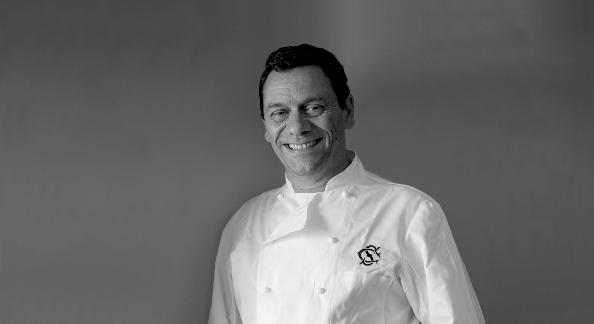

Cozinha portuguesa com alma.
01 O Chef
Foi dos primeiros a brincar com a cozinha tradicional portuguesa — quando isso ainda era quase uma ofensa.

Antes da cozinha esteve a música — piano, depois baixo, depois técnico de som. Estudou Biologia na Alemanha, onde fazia uns extras em restaurantes para compor o sustento. De volta ao Porto, foi diretor de produto no têxtil.
Em 1992, num volte-face, abre o primeiro restaurante na Maia. Seguem-se o Restaurante do Miguel, na Foz, e o Bull & Bear, no edifício da Bolsa — onde consolida a reputação dentro e fora do país.
Hoje é consultor, autor e a assinatura por trás de casas em Lisboa, Porto, Gaia e no Douro. Representou Portugal em Hong Kong, Xangai, Paris, Bordéus, Bruxelas, Budapeste e São Paulo.
- 35
- anos de cozinha
- 3
- livros publicados
- 2000
- Cozinheiro do Ano · Academia Portuguesa de Gastronomia
- 2017
- Prémio de carreira David Lopes Ramos · Revista de Vinhos
02 Percurso
Do Porto
para o mundo
03 Pratos de assinatura
A biblioteca
de pratos
Os pratos que criou e que ficaram. Não é uma carta: é uma memória da cozinha portuguesa, para quem gosta de comer e para quem cozinha.
04 Projetos
Onde se come
hoje
Arquivo
05 Livros
A cozinha,
por escrito
06 Imprensa
O que se
escreveu
“Um dos chefs do momento na cidade.”
Time Out Lisboa · 2010
- FTBull & Bear entre os 25 melhores restaurantes da Europa · Financial Times, 2004
- IWWC1.º lugar entre os dez chefs de referência em Portugal · 2004
- ExpressoGarfo de Ouro · Bull & Bear, 2003
- LarousseTrês receitas no Larousse Gastronomique · 2007
07 Galeria
Pratos, casas
e momentos
Acompanhe
a cozinha
08 Contactos
Vamos
pôr a mesa?
Eventos, consultoria, imprensa ou outro assunto: escreva-nos. A resposta chega por email.